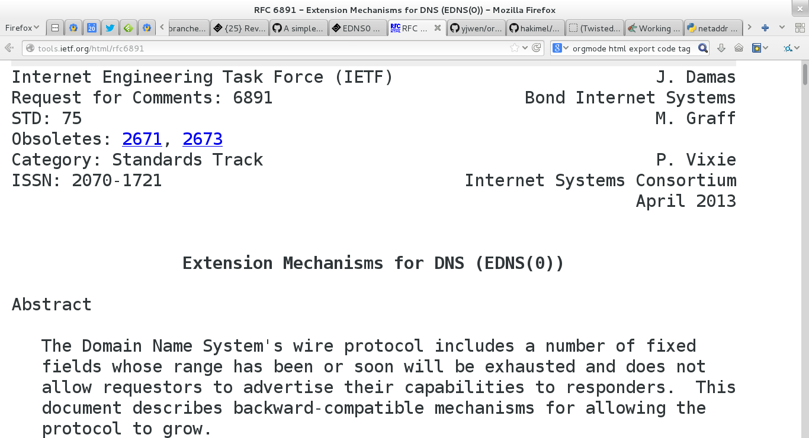

https://twistedmatrix.com/trac/changeset/440
23 September 2001
$ git log --date=short --format='%ad: %<(10,trunc) %an: %s' twisted/names/
2014-05-12: hawkowl : Merge no-conflict-14.0-7039: Release Twisted 14.0.0 2014-02-28: rwall : Merge pyflakes-pair-6993 2014-02-25: rwall : Merge serial-number-arithmetic-6672 2014-02-24: rwall : Merge reverse-lookup-example-6969 2014-02-20: rwall : Merge concise-ednsmessage-repr-6975 2014-02-10: rwall : Merge clean-response-message-6645-2 2014-02-02: hawkowl : Merge udp-broadcast-454-3: Add UDP broadcast support 2014-02-01: rwall : Merge names-howto-toctree-6940 2014-01-27: rwall : Merge names-client-documentation-6925 2014-01-21: rwall : Merge meaningful-message-repr-6847-2 2014-01-18: rwall : Merge custom-server-documentation-6864-2 2014-01-03: rwall : Merge names-server-coverage-6887-2 2014-01-03: rwall : Merge names-server-documentation-6886 2014-01-01: julian : Merge remove-deprecated-test-methods-names-6222: Remove to-be-deprecated test methods from twisted.names ... 2001-09-23: moshez : A blocking(!) resolver: just so nobody can say I made the situation worse... 2001-09-23: moshez : A resolver based on /etc/hosts 2001-09-23: moshez : Bah, there's no need to keep the numbers: they have no meaning except to order. 2001-09-23: moshez : Untuple one element tuple. Sorting doesn't care, but it ain't nice. 2001-09-23: moshez : * Saving the original message inside each answer * Properly dealing with answers of MX queries, by decompressing the return 2001-09-23: moshez : Only timeout if we are not done yet 2001-09-23: moshez : Added names.dns.Resolver, a high-level interface to DNS suitable for clients 2001-09-23: moshez : Giving a richer interface: user can now determine class, type and whether the query is recursive Recursive queries are now th 2001-09-23: moshez : First prototype of twisted.names * Changed udp.Port to simulate connections + We need to get rid of .dup() at some point
$ trial twisted.names
twisted.names.test.test_cache
Caching
test_cachedResultExpires ... [OK]
test_constructorExpires ... [OK]
test_expiredTTLLookup ... [OK]
test_interface ... [OK]
test_lookup ... [OK]
test_normalLookup ... [OK]
twisted.names.test.test_client
ClientTestCase
test_getHostByName ... [OK]
...
Ran 592 tests in 1.343s
PASSED (skips=12, successes=580)
$ coverage run --branch --omit='*twisted/names/test/*' --source=twisted.names $(type -p trial) twisted.names
from twisted.internet import task from twisted.names import dns def main(reactor): proto = dns.DNSDatagramProtocol(controller=None) reactor.listenUDP(0, proto) d = proto.query(('8.8.8.8', 53), [dns.Query('www.example.com', dns.AAAA)]) d.addCallback(printResult) return d def printResult(res): print 'ANSWERS: ', [a.payload for a in res.answers] task.react(main)
example1.py
$ python example1.py ANSWERS: [<AAAA address=2606:2800:220:6d:26bf:1447:1097:aa7 ttl=10091>]
from twisted.internet import defer, task from twisted.names import dns def main(reactor): proto = dns.DNSDatagramProtocol(controller=Controller()) reactor.listenUDP(10053, proto) return defer.Deferred() class Controller(object): def messageReceived(self, message, proto, address): print "MESSAGE_RECEIVED", message.queries, "FROM", address message.answer = True message.answers = [ dns.RRHeader(message.queries[0].name.name, payload=dns.Record_A('192.0.2.1')) ] proto.writeMessage(message, address) task.react(main)
example2.py
$ dig -p 10053 @localhost foo.bar A +short ;; Warning: query response not set 192.0.2.1
$ python example2.py MESSAGE_RECEIVED [Query('foo.bar', 1, 1)] FROM ('127.0.0.1', 51515)
from netaddr import IPNetwork from twisted.internet import defer, task from twisted.names import client def main(reactor): pending = [] for addr in IPNetwork('79.170.40.0/24'): d = client.lookupPointer(addr.reverse_dns, timeout=(1,)) pending.append(d) return defer.DeferredList(pending, consumeErrors=True).addCallback(printResult) def printResult(results): good = 0 for success, result in results: if success: answers, authority, additional = result print 'RESULT: ', [(a.name.name, a.payload) for a in answers] good += 1 print good, 'responses to', len(results), 'queries' task.react(main)
example3.py
$ time python example3.py RESULT: [('2.40.170.79.in-addr.arpa', <PTR name=ns1.mainnameserver.com ttl=10441>)] RESULT: [('3.40.170.79.in-addr.arpa', <PTR name=ns2.mainnameserver.com ttl=10515>)] ... RESULT: [('92.40.170.79.in-addr.arpa', <PTR name=mail92.extendcp.co.uk ttl=10515>)] RESULT: [('94.40.170.79.in-addr.arpa', <PTR name=mail94.extendcp.co.uk ttl=10440>)] 73 responses to 256 queries real 0m1.490s user 0m0.655s sys 0m0.112s
$ twistd dns --help
Usage: twistd [options] dns [options]
Options:
-c, --cache Enable record caching
-r, --recursive Perform recursive lookups
-v, --verbose Increment verbosity level
-i, --interface= The interface to which to bind [default: ]
-p, --port= The port on which to listen [default: 53]
--resolv-conf= Override location of resolv.conf (implies --recursive)
--hosts-file= Perform lookups with a hosts file
--help Display this help and exit.
--version Display Twisted version and exit.
--secondary= Act as secondary for the specified domain, performing zone
transfers from the specified IP (IP/domain)
--pyzone= Specify the filename of a Python syntax zone definition
--bindzone= Specify the filename of a BIND9 syntax zone definition
$ twistd -n dns --port 10053 --recursive 2013-09-20 04:36:08+0100 [-] Log opened. 2013-09-20 04:36:08+0100 [-] twistd 13.1.0 (/usr/bin/python 2.7.5) starting up. 2013-09-20 04:36:08+0100 [-] reactor class: twisted.internet.epollreactor.EPollReactor. 2013-09-20 04:36:08+0100 [-] DNSServerFactory starting on 10053 2013-09-20 04:36:08+0100 [-] DNSDatagramProtocol starting on 10053 2013-09-20 04:36:08+0100 [-] Starting protocol <twisted.names.dns.DNSDatagramProtocol object at 0x288da50> 2013-09-20 04:36:40+0100 [DNSDatagramProtocol (UDP)] DNSDatagramProtocol starting on 61406 2013-09-20 04:36:40+0100 [DNSDatagramProtocol (UDP)] Starting protocol <twisted.names.dns.DNSDatagramProtocol object at 0x2895450> 2013-09-20 04:36:40+0100 [-] (UDP Port 61406 Closed) 2013-09-20 04:36:40+0100 [-] Stopping protocol <twisted.names.dns.DNSDatagramProtocol object at 0x2895450>
$ dig -p 10053 @localhost www.example.com A +short 93.184.216.119
zone = [ SOA( 'example.com', mname = "ns1.example.com", rname = "dnsmaster.example.com", serial = 2013092001, refresh = "1H", retry = "1H", expire = "1H", minimum = "1H" ), NS('example.com', 'ns1.example.com'), MX('example.com', 0, 'mail.example.com'), A('example.com', '192.0.2.10'), CNAME('www.example.com', 'example.com'), A('mail.example.com', '192.0.2.20'), A('ns1.example.com', '192.0.2.30'), ]
example.com.py
$ twistd -n dns --port 10053 --pyzone=examples/example.com.py
$ dig -p 10053 @localhost www.example.com A +short example.com. 192.0.2.10
dnsmap - https://code.google.com/p/dnsmap/
$ dnsmap dnsmap 0.30 - DNS Network Mapper by pagvac (gnucitizen.org) usage: dnsmap <target-domain> [options] options: -w <wordlist-file> -r <regular-results-file> -c <csv-results-file> -d <delay-millisecs> -i <ips-to-ignore> (useful if you're obtaining false positives) e.g.: dnsmap target-domain.foo dnsmap target-domain.foo -w yourwordlist.txt -r /tmp/domainbf_results.txt dnsmap target-fomain.foo -r /tmp/ -d 3000 dnsmap target-fomain.foo -r ./domainbf_results.txt
$ time dnsmap spotify.com ... groups.spotify.com IP address #1: 173.194.69.121 ^C real 0m48.784s user 0m0.086s sys 0m0.460s
import sys from twisted.internet import defer, task from twisted.names import client, error CONCURRENCY = 100 def subdomains(parent_domain, children): yield parent_domain for child in children: yield child + '.' + parent_domain class DNSMapper(object): def __init__(self): self.success = [] self.failure = [] self.timeout = [] def _handle_result(self, res, domain): answers, authority, additional = res if answers: self.success.append(domain) sys.stdout.write("{domain} ({count})\n".format(domain=domain, count=len(answers))) def _handle_error(self, result, domain): error_type = result.trap(error.DNSQueryTimeoutError, error.DomainError, defer.TimeoutError) if error_type in (error.DNSQueryTimeoutError, defer.TimeoutError): self.timeout.append(domain) elif error_type is error.DomainError: self.failure.append(domain) def sender(self, domains): resolver = client.Resolver(servers=[('8.8.8.8', 53)]) for domain in domains: d = resolver.lookupAllRecords(domain, timeout=(5,10)) d.addCallback(self._handle_result, domain) d.addErrback(self._handle_error, domain) yield d def summary(self): return 'SUCCESS: {success}, FAILURE: {failure}, TIMEOUT: {timeout}'.format( success=len(self.success), failure=len(self.failure), timeout=len(self.timeout)) def main(reactor, parent_domain, wordfile=None): if wordfile in (None, '-'): wordfile = sys.stdin else: wordfile = open(wordfile) mapper = DNSMapper() domains = subdomains(parent_domain, (word.strip() for word in wordfile)) clients = [] for i in range(CONCURRENCY): client = task.cooperate(mapper.sender(domains)) clients.append(client.whenDone()) result = defer.DeferredList(clients) def print_summary(res): print(mapper.summary()) result.addBoth(print_summary) return result task.react(main, sys.argv[1:])
dnsmap.py
$ time python examples/dnsmap.py spotify.com prefixes.txt accounts.spotify.com (1) ap.spotify.com (1) beta.spotify.com (1) blog.spotify.com (1) developers.spotify.com (1) download.spotify.com (1) spotify.com (16) er.spotify.com (5) fg.spotify.com (1) files.spotify.com (1) groups.spotify.com (1) images.spotify.com (1) labs.spotify.com (1) log.spotify.com (3) login.spotify.com (1) m.spotify.com (1) mail.spotify.com (1) mobile.spotify.com (1) news.spotify.com (1) ns1.spotify.com (1) ns2.spotify.com (1) ns3.spotify.com (1) partners.spotify.com (1) r.spotify.com (1) support.spotify.com (1) wap.spotify.com (1) ws.spotify.com (1) www.spotify.com (1) SUCCESS: 28, FAILURE: 918, TIMEOUT: 64 real 0m2.529s user 0m1.461s sys 0m0.185s
"Twisted Names EDNS(0) and DNSSEC Client Support"
RFC6891 
def test_613_badVersion(self): """ If a responder does not implement the VERSION level of the request, then it MUST respond with RCODE=BADVERS. https://tools.ietf.org/html/rfc6891#section-6.1.3 """ proto = edns.EDNSDatagramProtocol( controller=None, ednsVersion=255) self.connectProtocol(proto) d = proto.query(self.server, [dns.Query('.', dns.NS, dns.IN)]) d.addCallback( lambda message: self.assertEqual(message.rCode, dns.EBADVERSION)) return d
allowing secure transparent client connections from a dual-stack IPv4 / IPv6 host.
allowing Twisted HTTP clients to additionally validate certificates using signed DNS records.
allowing Twisted SSH clients to validate the public keys of a remote SSH server using signed DNS records.
allowing Twisted SMTP clients to validate remote server certificates using signed DNS records.
which communicates securely with a Twisted DNSSEC validating server via an SSL/TLS or SSH transport. For situations where a Twisted client can't do DNSSEC verification its self.
with an integrated SSH / HTTPS REST API for receiving and signing DS keys from the servers for delegated child zones.